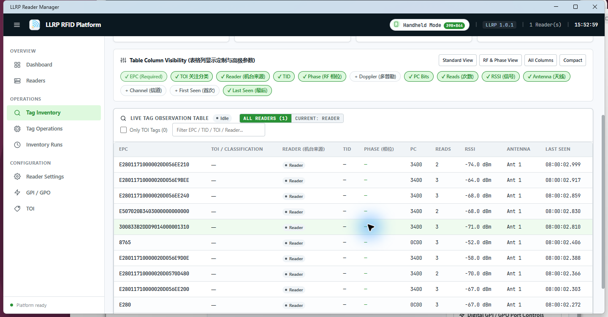

02 / MAUI BLAZOR HYBRID
LlrpReaderManager · Windows Manual
LlrpReaderManager (Windows) is built upon the .NET MAUI Blazor Hybrid architecture, offering modern responsive web UI paradigms combined with native Windows windowing and direct platform service access.
1. Architecture & Positioning
Directly consumes the shared LlrpReaderPlatform.Services core, rendering high-performance Blazor interfaces via WebView2 while maintaining identical lifecycle management and Session Gate rules.
2. Installation & Launch
Download LlrpReaderManager-v2.0.4-win-x64.zip from Releases, extract to any folder, and execute LlrpReaderManager.exe.
3. Dashboard & Monitoring

4. Core Operations Workflow
- Add & Probe Reader: Open Readers, enter IP and port, click Probe to verify capabilities, and click Enable.
- Start Inventory: Open Tag Inventory, click Start to monitor real-time EPCs, RSSI, and count.
- Tag Memory Operations: Open Tag Operations to read/write specific Memory Banks.
- Configure Settings: Adjust parameters under Reader Settings following the Query → Edit → Apply closed loop.
6. Notes
For maximum hardware qualification testing and industrial field debugging, we recommend LLRP Reader Studio (WPF).